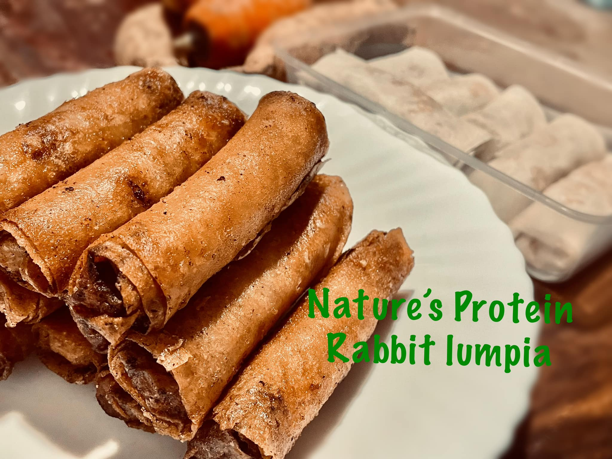
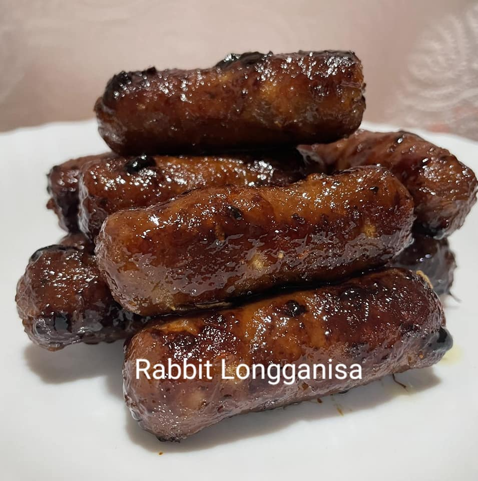

Menu

Rabbit Lumpia
Delicious crispy spring rolls filled with tender rabbit meat and fresh vegetables. Perfect as a snack or appetizer! Available in raw pack ready to cook and enjoy at home!

Rabbit Longaniza
Our signature rabbit longaniza offers a sweet and savory flavor, packed with spices and lean rabbit meat goodness. Available in raw pack ready to cook and enjoy at home!

Rabbit Sisig
A sizzling plate of rabbit sisig with tangy calamansi and spicy chili peppers—crispy and juicy, a true Filipino favorite!

Rabbit Ground Meat
Rabbit Ground Meat is a lean, protein-rich alternative to traditional ground meats. It's incredibly versatile—perfect for burgers, meatballs, tacos, dumplings, and more.